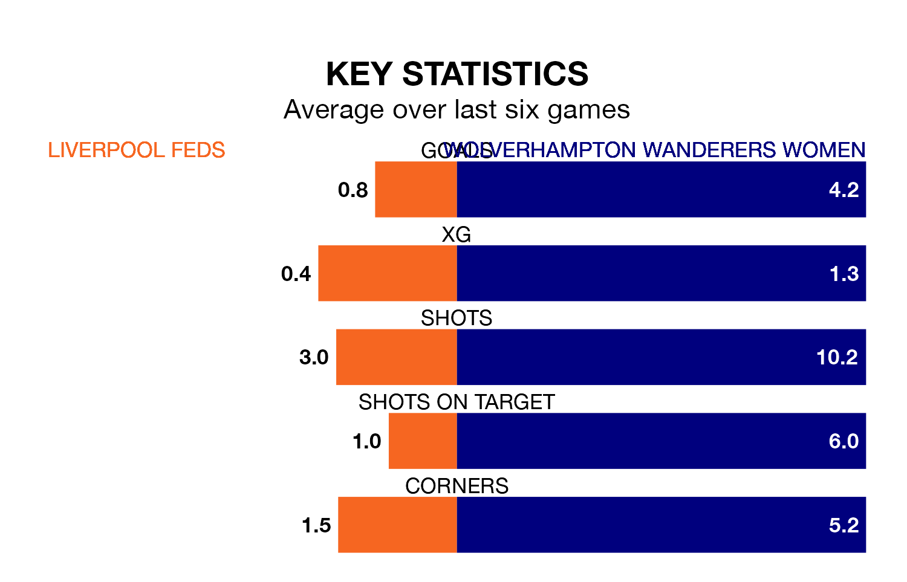

Wolverhampton Wanderers Women come to play Liverpool Feds on early Sunday in excellent form, having collected 16 points from their last six games.
The visitors have won five and drawn one of their last six fixtures, while Liverpool Feds have a win and four draws.
With 51 goals in 21 games so far this season, Wolverhampton Wanderers are the league's highest scorers with 2.4 goals per game. And they are conceding fewer than average, letting in 15 goals at a rate of 0.7 per game.
Liverpool Feds, meanwhile, are below average scorers, with 1.2 goals per game, compared to a league average of 1.5. They have conceded 1.6 goals per game.
The visitors are second in the table after 21 games, of which they have won 12 and drawn six, earning 42 points.
The home side are six places behind Wolverhampton Wanderers in eighth, with five wins and 10 draws putting them on 25 points.
In the last three years, Liverpool Feds and Wolverhampton Wanderers have played each other on three occasions. Wolverhampton Wanderers won two of them and they drew once.
Their last meeting was on March 3, when Wolverhampton Wanderers won 3-0 at home.
Liverpool Feds's last match was on April 21, a 0-0 draw against Burnley Women.
Wolverhampton Wanderers drew 0-0 with Halifax Women last time out, on Wednesday.
Updated: 12:00 (UTC), 02/05/24